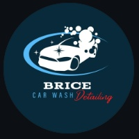

01
Cuidado exterior
Brillo, limpieza y protección para que luzca como nuevo.

BRICECAR WASH DetailingRecuperamos su apariencia, limpiamos a fondo y protegemos lo que te importa. Nosotros vamos hasta donde está tu vehículo.
Te guiamos paso a paso según lo que necesitas.Cuéntanos qué quieres mejorar y te ayudamos a encontrar la mejor forma de cuidar tu vehículo.
Soluciones reales para cada necesidad de tu vehículo.
Brillo, limpieza y protección para que luzca como nuevo.
Un espacio limpio, fresco y cómodo para volver a disfrutarlo.
Presentación y cuidado en cada detalle.
Recupera el brillo y mejora la apariencia de la superficie.
Una presentación más limpia y cuidada del compartimiento.
Mira la diferencia que podemos hacer en tu vehículo. Cada servicio parte de una necesidad real.
No tienes que descubrirlo todo por tu cuenta. Nosotros te acompañamos.
Responde unas preguntas rápidas en nuestro asistente.
Te mostramos el servicio que tiene sentido para tu vehículo.
Elige fecha, hora y lugar. Nosotros vamos.
Y seguimos contigo después del servicio.
“Increíble trabajo. Mi carro quedó como nuevo. Súper recomendado.”
Michael R.★★★★★ · Google“Puntuales, profesionales y con una atención excelente.”
Sarah T.★★★★★ · Google“La diferencia es real. Definitivamente volveré a reservar.”
James L.★★★★★ · GoogleBrice nació para llevar el cuidado profesional hasta tu vehículo, con atención al detalle y una experiencia sencilla desde el primer contacto.
Atendemos en Greenville, SC y el área definida por Brice.
Sí. El asistente te ayuda a definir qué tiene sentido según lo que quieres mejorar.
Depende del estado del vehículo y del servicio elegido. Lo definimos contigo antes de agendar.
Te indicamos lo necesario antes de la cita para que todo sea sencillo.
Trabajamos con productos profesionales adecuados para cada superficie.
Sí. Los adicionales aparecen después de definir y cotizar tu servicio base.